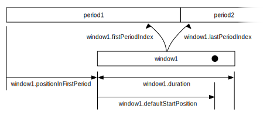

Package com.google.android.exoplayer2
Class Timeline.Window
- java.lang.Object
-
- com.google.android.exoplayer2.Timeline.Window
-
- All Implemented Interfaces:
Bundleable
- Enclosing class:
- Timeline
public static final class Timeline.Window extends Object implements Bundleable
Holds information about a window in aTimeline. A window usually corresponds to one playlist item and defines a region of media currently available for playback along with additional information such as whether seeking is supported within the window. The figure below shows some of the information defined by a window, as well as how this information relates to correspondingPeriodsin the timeline.
-
-
Nested Class Summary
-
Nested classes/interfaces inherited from interface com.google.android.exoplayer2.Bundleable
Bundleable.Creator<T extends Bundleable>
-
-
Field Summary
Fields Modifier and Type Field Description static Bundleable.Creator<Timeline.Window>CREATORObject that can restoreTimeline.Periodfrom aBundle.longdefaultPositionUsThe default position relative to the start of the window at which to begin playback, in microseconds.longdurationUsThe duration of this window in microseconds, orC.TIME_UNSETif unknown.longelapsedRealtimeEpochOffsetMsThe offset betweenSystemClock.elapsedRealtime()and the time since the Unix epoch according to the clock of the media origin server, orC.TIME_UNSETif unknown or not applicable.intfirstPeriodIndexThe index of the first period that belongs to this window.booleanisDynamicWhether this window may change when the timeline is updated.booleanisLiveDeprecated.UseisLive()instead.booleanisPlaceholderWhether this window contains placeholder information because the real information has yet to be loaded.booleanisSeekableWhether it's possible to seek within this window.intlastPeriodIndexThe index of the last period that belongs to this window.MediaItem.LiveConfigurationliveConfigurationTheMediaItem.LiveConfigurationthat is used or null ifisLive()returns false.ObjectmanifestThe manifest of the window.MediaItemmediaItemTheMediaItemassociated to the window.longpositionInFirstPeriodUsThe position of the start of this window relative to the start of the first period belonging to it, in microseconds.longpresentationStartTimeMsThe start time of the presentation to which this window belongs in milliseconds since the Unix epoch, orC.TIME_UNSETif unknown or not applicable.static ObjectSINGLE_WINDOW_UIDObjecttagDeprecated.UsemediaIteminstead.ObjectuidA unique identifier for the window.longwindowStartTimeMsThe window's start time in milliseconds since the Unix epoch, orC.TIME_UNSETif unknown or not applicable.
-
Constructor Summary
Constructors Constructor Description Window()Creates window.
-
Method Summary
All Methods Instance Methods Concrete Methods Modifier and Type Method Description booleanequals(Object obj)longgetCurrentUnixTimeMs()Returns the current time in milliseconds since the Unix epoch.longgetDefaultPositionMs()Returns the default position relative to the start of the window at which to begin playback, in milliseconds.longgetDefaultPositionUs()Returns the default position relative to the start of the window at which to begin playback, in microseconds.longgetDurationMs()Returns the duration of the window in milliseconds, orC.TIME_UNSETif unknown.longgetDurationUs()Returns the duration of this window in microseconds, orC.TIME_UNSETif unknown.longgetPositionInFirstPeriodMs()Returns the position of the start of this window relative to the start of the first period belonging to it, in milliseconds.longgetPositionInFirstPeriodUs()Returns the position of the start of this window relative to the start of the first period belonging to it, in microseconds.inthashCode()booleanisLive()Returns whether this is a live stream.Timeline.Windowset(Object uid, MediaItem mediaItem, Object manifest, long presentationStartTimeMs, long windowStartTimeMs, long elapsedRealtimeEpochOffsetMs, boolean isSeekable, boolean isDynamic, MediaItem.LiveConfiguration liveConfiguration, long defaultPositionUs, long durationUs, int firstPeriodIndex, int lastPeriodIndex, long positionInFirstPeriodUs)Sets the data held by this window.BundletoBundle()Returns aBundlerepresenting the information stored in this object.
-
-
-
Field Detail
-
SINGLE_WINDOW_UID
public static final Object SINGLE_WINDOW_UID
-
uid
public Object uid
A unique identifier for the window. Single-windowTimelinesmust useSINGLE_WINDOW_UID.
-
tag
@Deprecated @Nullable public Object tag
Deprecated.UsemediaIteminstead.
-
mediaItem
public MediaItem mediaItem
TheMediaItemassociated to the window. Not necessarily unique.
-
manifest
@Nullable public Object manifest
The manifest of the window. May benull.
-
presentationStartTimeMs
public long presentationStartTimeMs
The start time of the presentation to which this window belongs in milliseconds since the Unix epoch, orC.TIME_UNSETif unknown or not applicable. For informational purposes only.
-
windowStartTimeMs
public long windowStartTimeMs
The window's start time in milliseconds since the Unix epoch, orC.TIME_UNSETif unknown or not applicable.
-
elapsedRealtimeEpochOffsetMs
public long elapsedRealtimeEpochOffsetMs
The offset betweenSystemClock.elapsedRealtime()and the time since the Unix epoch according to the clock of the media origin server, orC.TIME_UNSETif unknown or not applicable.Note that the current Unix time can be retrieved using
getCurrentUnixTimeMs()and is calculated asSystemClock.elapsedRealtime() + elapsedRealtimeEpochOffsetMs.
-
isSeekable
public boolean isSeekable
Whether it's possible to seek within this window.
-
isDynamic
public boolean isDynamic
Whether this window may change when the timeline is updated.
-
isLive
@Deprecated public boolean isLive
Deprecated.UseisLive()instead.
-
liveConfiguration
@Nullable public MediaItem.LiveConfiguration liveConfiguration
TheMediaItem.LiveConfigurationthat is used or null ifisLive()returns false.
-
isPlaceholder
public boolean isPlaceholder
Whether this window contains placeholder information because the real information has yet to be loaded.
-
defaultPositionUs
public long defaultPositionUs
The default position relative to the start of the window at which to begin playback, in microseconds. May beC.TIME_UNSETif and only if the window was populated with a non-zero default position projection, and if the specified projection cannot be performed whilst remaining within the bounds of the window.
-
durationUs
public long durationUs
The duration of this window in microseconds, orC.TIME_UNSETif unknown.
-
firstPeriodIndex
public int firstPeriodIndex
The index of the first period that belongs to this window.
-
lastPeriodIndex
public int lastPeriodIndex
The index of the last period that belongs to this window.
-
positionInFirstPeriodUs
public long positionInFirstPeriodUs
The position of the start of this window relative to the start of the first period belonging to it, in microseconds.
-
CREATOR
public static final Bundleable.Creator<Timeline.Window> CREATOR
Object that can restoreTimeline.Periodfrom aBundle.The
uidof a restored instance will be a fakeObjectand themanifestof the instance will benull.
-
-
Method Detail
-
set
public Timeline.Window set(Object uid, @Nullable MediaItem mediaItem, @Nullable Object manifest, long presentationStartTimeMs, long windowStartTimeMs, long elapsedRealtimeEpochOffsetMs, boolean isSeekable, boolean isDynamic, @Nullable MediaItem.LiveConfiguration liveConfiguration, long defaultPositionUs, long durationUs, int firstPeriodIndex, int lastPeriodIndex, long positionInFirstPeriodUs)
Sets the data held by this window.
-
getDefaultPositionMs
public long getDefaultPositionMs()
Returns the default position relative to the start of the window at which to begin playback, in milliseconds. May beC.TIME_UNSETif and only if the window was populated with a non-zero default position projection, and if the specified projection cannot be performed whilst remaining within the bounds of the window.
-
getDefaultPositionUs
public long getDefaultPositionUs()
Returns the default position relative to the start of the window at which to begin playback, in microseconds. May beC.TIME_UNSETif and only if the window was populated with a non-zero default position projection, and if the specified projection cannot be performed whilst remaining within the bounds of the window.
-
getDurationMs
public long getDurationMs()
Returns the duration of the window in milliseconds, orC.TIME_UNSETif unknown.
-
getDurationUs
public long getDurationUs()
Returns the duration of this window in microseconds, orC.TIME_UNSETif unknown.
-
getPositionInFirstPeriodMs
public long getPositionInFirstPeriodMs()
Returns the position of the start of this window relative to the start of the first period belonging to it, in milliseconds.
-
getPositionInFirstPeriodUs
public long getPositionInFirstPeriodUs()
Returns the position of the start of this window relative to the start of the first period belonging to it, in microseconds.
-
getCurrentUnixTimeMs
public long getCurrentUnixTimeMs()
Returns the current time in milliseconds since the Unix epoch.This method applies
known correctionsmade available by the media such that this time corresponds to the clock of the media origin server.
-
isLive
public boolean isLive()
Returns whether this is a live stream.
-
-